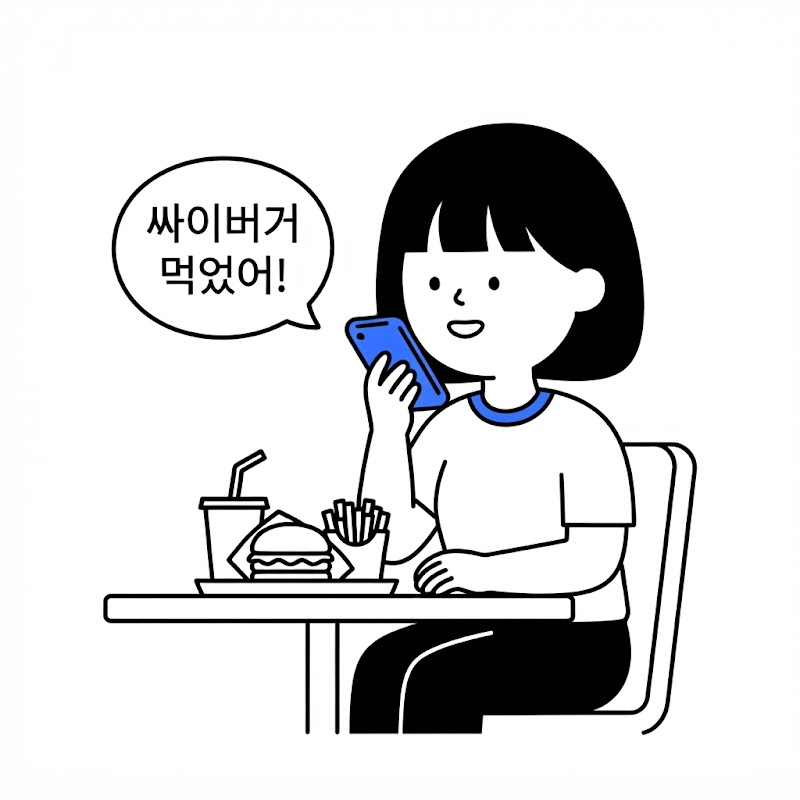
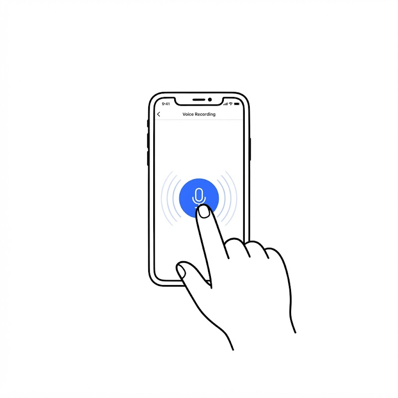
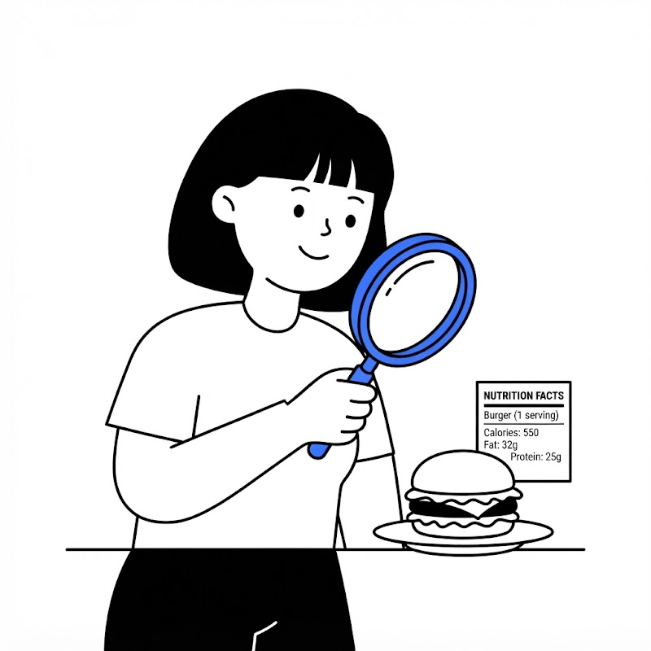
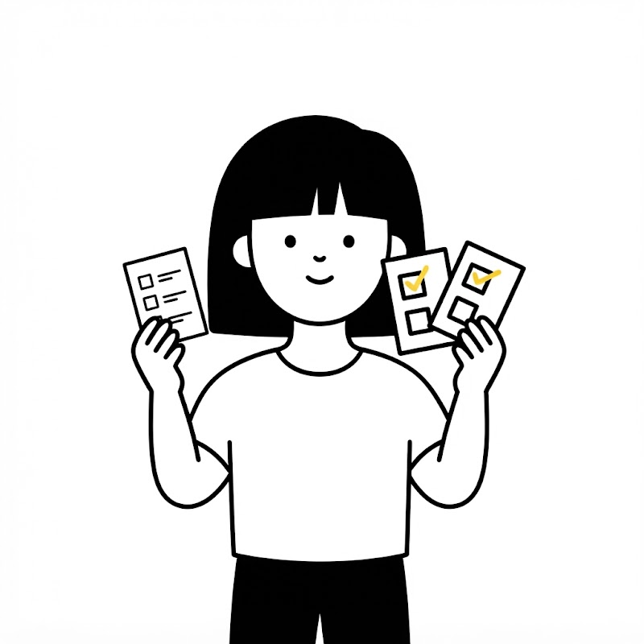

Just say it, FitLog logs it!
말 한마디로 끝나는
식단·운동 기록,
핏로그와 함께하세요.
손으로 일일이 적지 마세요. 말하거나 사진 찍으면 AI가 영양소 분석부터 미션 체크까지 알아서!

음성 인식 준비 완료
Scroll
arrow_downward
Step 1
기록은 3초,
성취감은 하루 종일!

auto_awesome
말하거나 찍어서 기록
오늘 먹은 점심, 가볍게 한마디 남겨보세요.
사진 한 장이면 칼로리와 탄단지까지 즉시 정리됩니다.

restaurant
AI가 자동으로 분석해요
음식명·칼로리·영양소 자동 기록
복잡한 식단 계산기는 이제 그만.
자연스러운 일상 언어를 AI가 알아듣고 영양 성분을 분석합니다.
부족한 단백질과 주의할 당류까지 한눈에 피드백해 드려요.

checklist
작은 습관이 만드는 변화
오늘의 미션 3종 세트
무리한 다이어트 대신 매일 지킬 수 있는 3가지 맞춤 미션.
물 1.5L 마시기, 단백질 채우기, 15분 산책하기처럼
쉽고 가벼운 실천으로 건강한 루틴을 완성하세요.
🔥 연속 11일
매일 쌓이는 뿌듯함
달력을 채우는 성취감
미션을 완료할 때마다 달력에 찍히는 노란 성공 도장!
연속 달성 스트릭으로 지속 가능한 동기부여를 얻고
한 달 후 눈에 띄게 달라진 나의 건강 변화를 확인하세요.
✦
★
이제 기록은 핏로그와 함께,
오늘 미션부터 시작해 보세요.
가입 즉시 나만의 맞춤 건강 미션 3개가 배정됩니다.